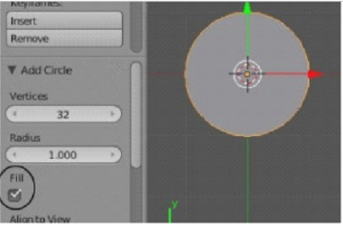
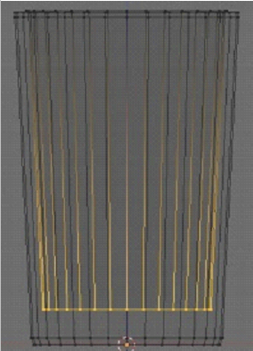
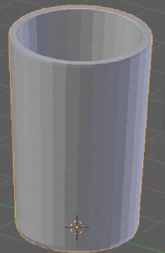
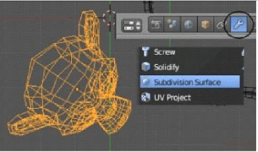
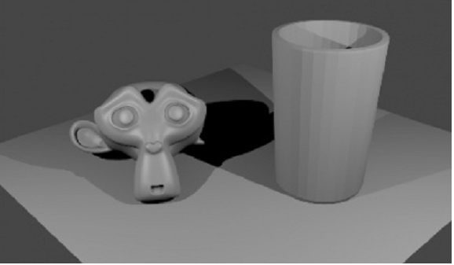
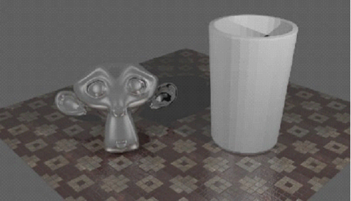
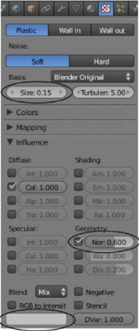
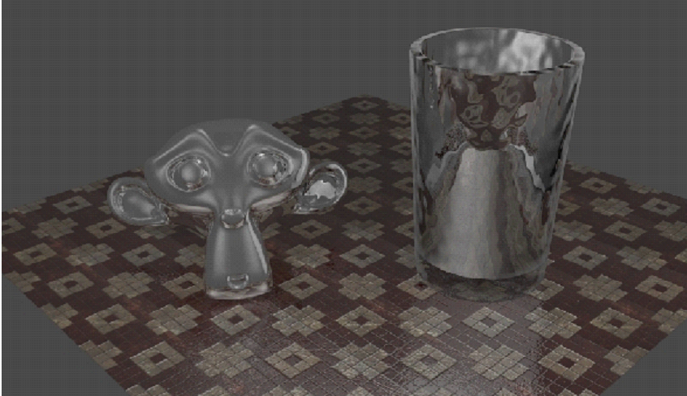

Raytracing. Практика.
Автор: James Chronister
Перевод: Азовцев Юрий aka gumanoed

В сцене с Маяком нет объектов, которые бы требовали зеркальности/прозрачности (кроме воды, но это сделает рендер крайне медленным), мы создадим новую сцену для практики по raytracing. Так как вы уже обладаем некоторым опытом моделирования методом экструдирования (вы это делали при создании маяка), давайте воспользуемся тем же методом для создания стакана. Создайте новую сцену и удалите из нее Куб. Переключитесь в Вид Сверху и добавьте Окружность (Circle). На Полке Инструментов включите опцию заполнения (Fill) для получения круга.

Теперь переключитесь в Вид Спереди, перейдите в Режим Редактирования созданного Круга и включите Каркасный (Wireframe) режим затенения. Начните экструдировать (клавиша "E") Круг и создайте форму простого стакана. После экструдирования поднимите вершины немного вверх и смасштабируйте их наружу для создания небольшого основания. После, смашстабируйте вверх еще раз для получения нужной высоты стакана. Затем, экструдируйте и смаштабируйте вершины в центр для получения верхней кромки стакана. Экструдируйте вниз для создания внутренней поверхности стакана и придания стенкам стакана некоторой толщины. Когда закончите, перейдите в Объектный Режим, переключите затенение в режим Solid и нажмите на Полке Инструментов кнопку "Smooth".

Самое время добавить плоскость, на которой будет стоять наш стакан. Что бы было веселее давайте добавим голову обезьянки. Включите параметр Smooth на Полке Инструментов и для нее. Затем, перейдите в панель Modifiers и добавьте для обезьянки модификатор Subdivision Surface для получения более плавной формы. Настройте освещение и положение камеры для получения изображения, схожего с изображением ниже:

Теперь, когда у нас есть основная сцена, самое время наложить материалы и текстуры на объекты. Наложите подходящую текстуру на пол и придайте ей небольшой зеркальный эффект с помощью параметров Ray Mirror, как описывалось на предыдущей странице. Так же наложите материал на голову обезьянки и увеличьте параметр Ray Mirror для придания эффекта хромированной поверхности.

Сейчас ваша сцена должна выглядеть примерно так. Вы можете заметить что плитка, которую я использовал для пола, имеет некоторую глубину. Я использовал параметр "Normal" для этой текстуры, по аналогии с наложением текстуры камня на Маяк. Если вам требуется некоторая помощь на этом этапе - обратитесь к главе "Материалы и Текстуры".


Теперь мы готовы наложить материал на наш Стакан. Для Стакана вам нужно установить некоторое значение параметра Fresnel на панели "Transparency" и немного увеличить значение IOR для преломления. При рендере изображения вы, наверняка, заметите что пол сквозь стакан не виден и он выглядит черным. Увеличьте значение параметра Depth до 5, это должно исправить проблему. Возможно вам захочется наложить на Стакан текстуру Stucci для придания ему некоторой неровности. Попробуйте уменьшить значение параметра Size до 0.15 и активировать параметр Normal. Не забудьте поменять вторичный цвет текстуры на белый, иначе у вас будет много розового на стакане. Продолжайте подбирать параметры до получения наилучшего, на ваш взгляд, результата.
Сделайте финальный рендер вашей сцены и сохраните изображение в формате JPEG.
